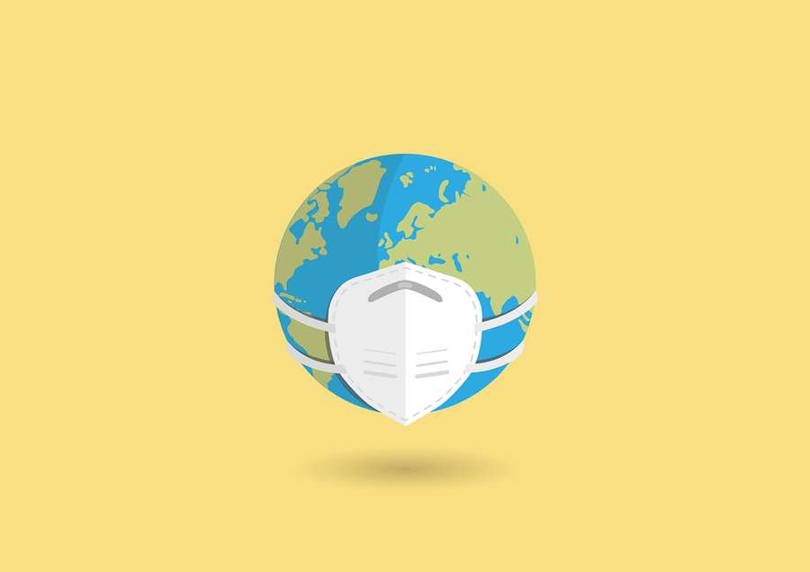

Corona Welt Pixabay
Univ. Prof. Dr. Arnold Pollak fasst den aktuellen Stand der medizinischen Forschung in Bezug auf Corona für den IKG-Krisenstab zusammen. Aufgrund des großen Interesses werden die wichtigsten Erkenntnisse auch regelmäßig veröffentlicht.
Update vom 22.02.2022
Wenn die Maske fällt!
Viel wird wieder über die Abschaffung der Masken diskutiert und in den Schulen – leider – bereits beschlossen. „Genug ist genug!“ Eine erst vor wenigen Wochen in einem der renommiertesten medizinischen Journalen erschienene Arbeit des Max-Planck-Instituts Göttingen gemeinsam mit einer Gruppe der Cornell University, NY, weist auf die enorme Bedeutung der Masken bei der Verhinderung von Infektionen hin. In der komplexen Studie fanden die Autorinnen und Autoren beispielsweise heraus, dass „Social Distancing“ alleine ohne Masken auch bei einem Abstand von drei Metern nur eine Risikoreduktion von 10 Prozent bringt. Trägt eine der beiden Gesprächspersonen eine Maske, reduziert sich auch bei einem Abstand von nur 1,5 Metern das Infektionsrisiko bereits um 20 Prozent, sogar nach einer Stunde. Tragen beide Gesprächspersonen eine gewöhnliche Stoffmaske, reduziert sich das Infektionsrisiko bereits um 30 Prozent. Tragen beide Personen eine korrekt angebrachte FFP2 Maske beträgt das Risiko für eine Infektion nur noch 0,4 Prozent. Dies ist die erste Studie, die mit konkreten Zahlen die enorme Bedeutung der Gesichtsmasken, besonders der FFP2-Masken, dokumentiert. Bevor wir also die Maske fallen lassen, sollten wir uns diese Zahlen nochmals vor Augen führen.
Pfizer: Ansuchen auf Zulassung einer COVID-Impfung für Kinder jünger als fünf Jahre
Pfizer-BioNTech hat bei der amerikanischen Gesundheitsbehörde FDA die Freigabe der Coronavirus-Impfung für Kinder im Alter von 1 bis 5 Jahren eingereicht. Es war insofern eine ungewöhnliche Situation, als die FDA die Firma von sich aus aufgefordert hatte, ein derartiges Ansuchen zu stellen, um rasch Kinder impfen zu können.
Die Dosis betrug 1/10 der Erwachsenen-Dosierung. Das Ergebnis war unerwartet. Die Impfung mit zwei Impfdosen im Abstand von 14 Tagen brachte leider nicht die erhoffte Immunantwort in dieser Altersgruppe. Nun wird versucht, ein besseres Ergebnis mit einer dritten Impfung im Abstand von zwei Monaten nach der zweiten Impfung zu erzielen. Diese Daten sind noch nicht veröffentlicht.
Neuer Impfstoff NOVAVAX
Wie aus den Medien bekannt, ist dieser Impfstoff demnächst in Österreich für Personen ab dem Alter von 18 Jahren – ausgenommen Schwangere und Stillende – freigegeben. Zwei Dosen im Abstand von mindestens drei Wochen sollen verabreicht werden. Im Gegensatz zu den derzeit verwendeten mRNA- oder Vektorimpfstoffen handelt es sich hierbei um den ersten Proteinimpfstoff, der in der EU zum Schutz vor COVID-19 zum Einsatz kommt. Die Technologie wird bei anderen Impfstoffen schon seit vielen Jahren eingesetzt, so zum Beispiel bei der Grippe-Schutzimpfung. Man hofft, dass dieser Impfstoff (als sog. Totimpfstoff) vor allem die „Impfskeptiker“ überzeugen kann. Aber ganz ohne Gentechnik kommt auch dieser Impfstoff nicht aus. In einer klinischen, Placebo kontrollierten Phase-III-Studie mit rund 30.000 Teilnehmerinnen und Teilnehmern in den USA und Mexiko konnte eine Schutzwirkung von circa 90 Prozent ermittelt werden. Zwei Drittel der Probanden erhielten zwei Dosen im Abstand von drei Wochen. Es kam insgesamt zu 77 Coronainfektionen: 63 davon in der Placebogruppe.
WICHTIGE INFORMATION FÜR PATIENTINNEN UND PATIENTEN: Impfung gegen COVID nach Behandlung mit Antikörpern
Bisher war die Empfehlung, dass Patientinnen und Patienten, die wegen einer COVID-Erkrankung im Spital „Monoklonale Antikörper“-Infusionen erhalten hatten, erst längere Zeit später, nämlich mindestens 90 Tage danach, ihre erste oder die Booster-Impfung bekommen sollten. Diese Empfehlung wurde von der CDC geändert. In einem aktuellen Update heißt es nun, dass aufgrund neuer Daten diese Patienten und Patientinnen möglichst bald nach ihrer Genesung ihre Impfung erhalten sollten. Ein Beispiel, dass Forschung im Fluss ist und immer neue Daten generiert.
Neues aus der Impfstoff-Forschung
Omikron wird wohl nicht die letzte Corona-Variante sein, die die Pandemie hervorbringt. Wissenschaftlerinnen und Wissenschaftler möchten sich vorbereiten und versuchen Impfstoffe zu entwickeln, die vor verschiedenen SARS-Cov2-Varianten schützen. Besonders weit sind in diesem Zusammenhang die US-Militärforscher des „Walter Reed Army Institute Of Research“ (WRAIR). Sie haben einen sogenannten „Spike Protein Ferritin Nanopartikelimpfstoff“ entwickelt. Im Prinzip funktioniert er wie der proteinbasierte Novavax. Nähere Daten wurden nicht bekanntgegeben. Eine andere Forschergruppe aus den USA nutzt für ihren Varianten-Impfstoff die mRNA-Technologie. Im Tierversuch erzeugte dieser Impfstoff effektive neutralisierende Antikörper gegen mehrere, unterschiedliche Spike Proteine, also gegen Mutanten. So interessant diese neueste Forschungsrichtung ist, einen echten Universal-Coronavirus-Impfstoff wird es so schnell nicht geben. Die Forschung wird in diese Richtung inzwischen stark gefördert.
Über den Tellerrand gesehen
Der 18. Dezember 2020 war für Israel und – es schien für die ganze Welt – ein wichtiger Tag zu sein als Ministerpräsident Netanyahu seine erste Pfizer BioNTech Impfung erhalten hatte und danach Folgendes sagte: “…this is the beginning of the end of the pandemic“! Leider hat er sich in diesem Punkt geirrt. 13 Monate später wurden weltweit 10 Milliarden Vakzine-Dosen verabreicht – in einer Geschwindigkeit, die man sich vorher nie hätte vorstellen können und pharmazeutische Firmen haben mit der Erzeugung derselben etwas zu Wege gebracht, das ebenfalls eine noch nie dagewesene Entwicklungs-und Logistikleistung war. Etwas ist allerdings bis heute nicht gelungen: Nämlich die Verteilung des Impfstoffes zwischen reichen und armen, aber dichtbesiedelten Ländern wie z. B. in Afrika. Theoretisch, aber leider nur theoretisch, hätten die 10 Milliarden Dosen ausgereicht, um weltweit 7,9 Milliarden Menschen wenigstens eine Impfung zu ermöglichen. Nach der „Our-World-in-Data-Project der University of Oxford“ haben in den reichen Ländern 77 Prozent der Einwohner zumindest eine Dosis erhalten während der Prozentsatz in den armen Ländern bei 10 Prozent liegt. In Nordamerika und Europa haben die Menschen im Zusammenhang mit Omikron ihre dritte oder sogar vierte Teilimpfung erhalten, während ein Drittel der Weltbevölkerung, viele Menschen davon in Afrika und Asien, noch auf ihren ersten Stich warten. 10 Milliarden Impfdosen verabreicht in so kurzer Zeit seien ein Triumph der Wissenschaft, aber gleichzeitig ein völliges Versagen der Solidarität, so Madhukar Pai, Professor für Epidemiologie und Biostatistik der McGill Universität, Montreal.
Gedenken an einen Mann, der das Coronavirus-Desaster voraussah
Vor genau zwei Jahren ist LI WENLIANG verstorben. Li, ein Augenarzt aus Wuhan in China, hatte Ende Dezember 2019 über Social Media seine Freundinnen und Freunde vor einem mysteriösen neuen Virus, das in seinem Spital grassierte, gewarnt. Er hatte große Sorgen über die weitere Ausbreitung, wurde aber sogleich von der lokalen Polizei verwarnt, keine „falschen“ Gerüchte in aller Öffentlichkeit zu verbreiten. Als aber die Regierung sich etwas später veranlasst sah, diesen Ausbruch doch zu bestätigen, wurde Lee ein Nationalheld. Im Februar 2020, unmittelbar nach seinem Tod, wurden seine letzten Worte auf der chinesischen Social-Media-Plattform „Weibo“ gepostet und seit damals hat er unzählige „Follower“. In der chinesischen Öffentlichkeit hat Li den Stellenwert eines Märtyrers.